Lab 1 - Initial System Setup
In this lab, we will be setting up some tools that you will be using throughout this class. To complete this lab, you should do all of the steps below as instructed. You are required to complete steps 1 - 3 in recitation. If you cannot complete all of the steps today, please screenshot steps 4 and 5 and upload the images to Canvas. Your screenshot must include your entire screen and a timestamp. Going forward, you may modify your setup to fit your needs (e.g., you do not need to use a VM, but it is highly recommended). When you are finished with the lab, show your work to your TA.
| Est. Time ⏱ |
|---|
| 150 minutes |
1. Setup Linux (Ubuntu) Virtual Machine (Required for Mac/Windows Users)
(35 Minutes)
- Department VM
- The department provides a VMWARE VM Image found here. For some students VMWARE works sluggishly on their machine, while others have issues getting VirtualBox to work properly on their machine. We have provided instructions here for setting up Ubuntu to VirtualBox, but you can also use the departments VM with VMWARE instead (which ever one works best for your system).
- 1. Download & Install VirtualBox
- Go to VitualBox and download the latest version of VirtualBox that matches your operating system.
- 2. Download Ubunutu ISO
- Go to Ubuntu and download the latest LTS (Long Term Support) ISO, currently 18.04.
- 3. Add a new Linux VM to VirtualBox
-
Select New and then update VM information:
Name: CSCI3308_WorkEnvironment
Type: Linux
Version: Ubuntu (64-bit)
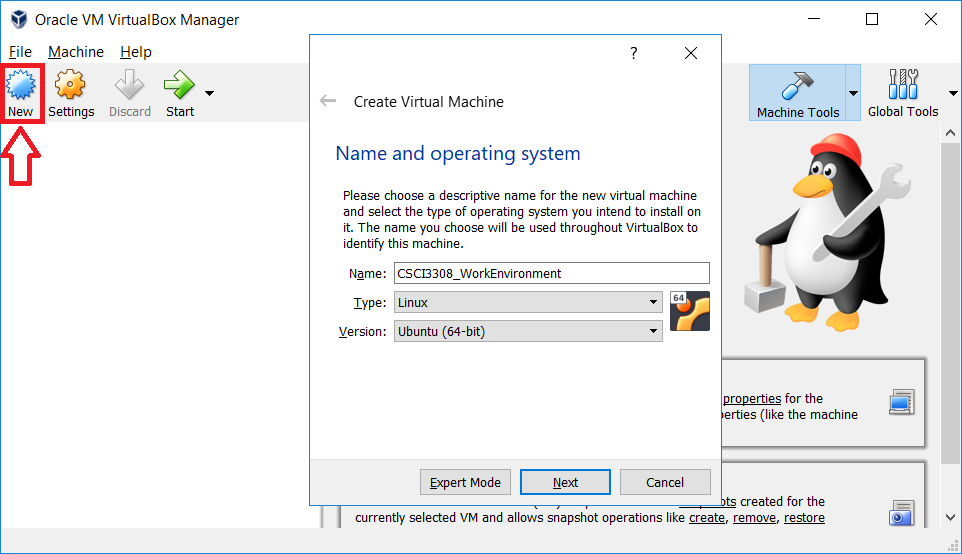 - 4. Set memory to 2GB (minimum requirement)
- 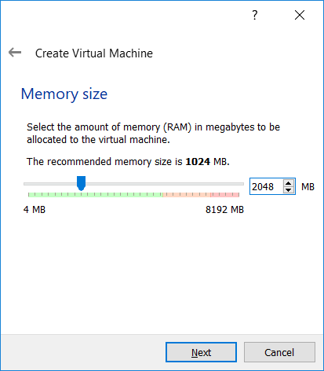
- 5. Create a Virtual Hard Disk
- 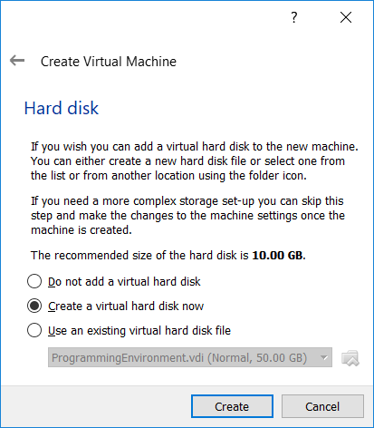
- 6. Choose VDI file type
- 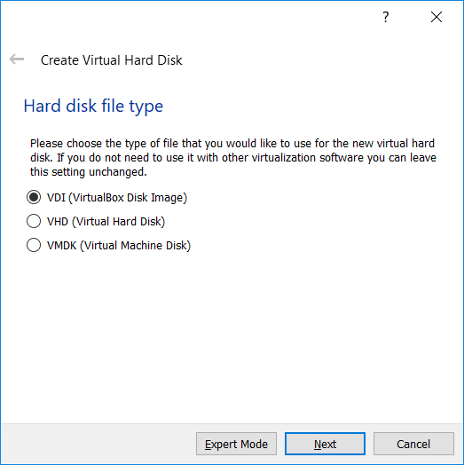
- 7. Choose dynamically allocated file storage
- 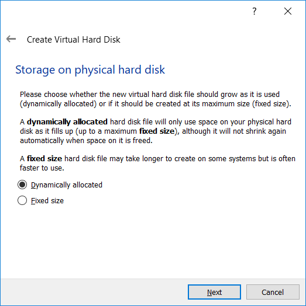
- 8. Choose file size & location (use default values)
- 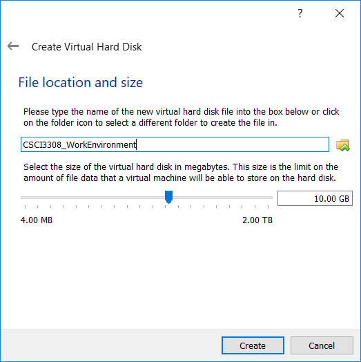
- 9. Modify VM's settings
- 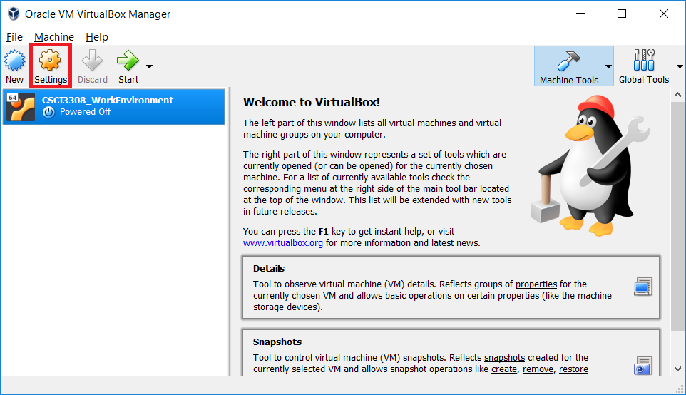
- 10. Load Ubuntu ISO
-
- Select Storage (left panel)
- Click Controller IDE
- Click the CD icon to "Choose Virtual Optical Disk File..."
- Find & select the Ubuntu ISO you downloaded earlier. This is most likely located in the Downloads folder.
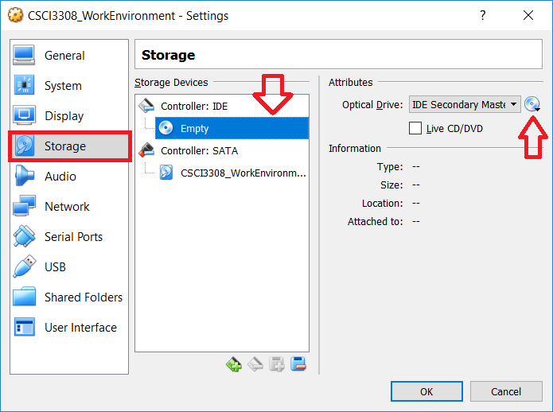 - 11. Click Start and install Ubuntu on your VM
-
Follow the onscreen prompts and use the default settings. Yes, even the "erase disk" option. Ubuntu assumes it is being installed on a real machine, but you are not actually modifing your computer's hard drive. This is erasing the virtual hard disk drive we created for our VirtualBox VM.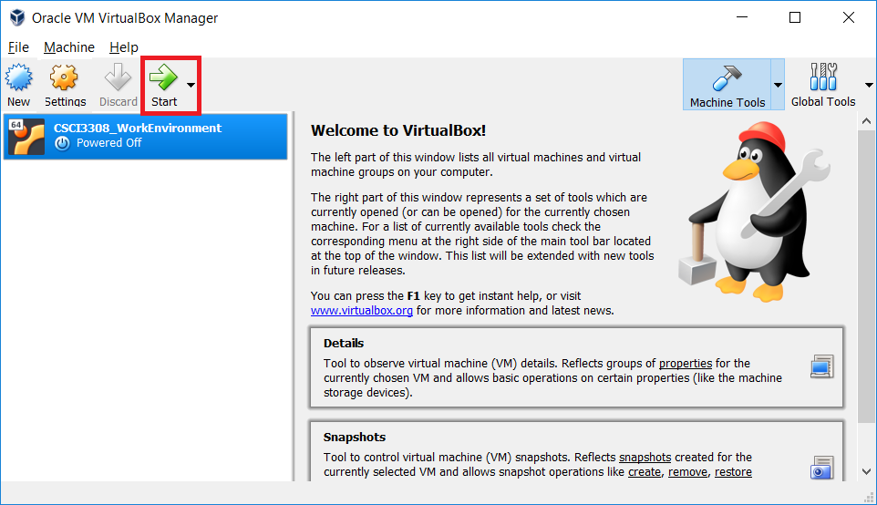
- 12. Install Guest Additions
-
After you have installed Ubuntu, you can now install Guest Additions, which provides some extra VM tools (like copy/paste between the host & VM).
First, we'll need to install some dependencies on our virtual machine. Copy the following into a terminalsudo apt install linux-headers-$(uname -r) build-essential dkms
Select Devices > Insert Guest Additions.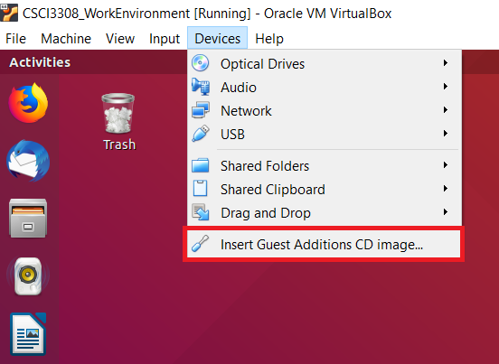
Select "Run" and allow Ubuntu to install the Guest Additions software.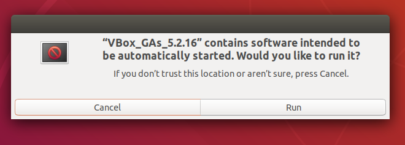
To finish, right-click the Guest Additions CD and select "Eject". Now restart your virtual machine.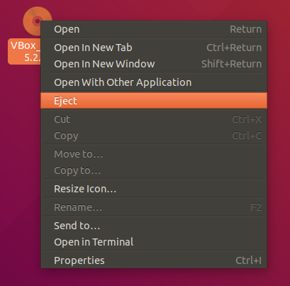
2. Setup Github Repository
(10 Minutes)
- 1. Sign up for Github
- If you do not already have an account, create one at Github
- 2. Create a New Github Repo
-
Click the "+" in the upper right corner on your github page and select "New repository"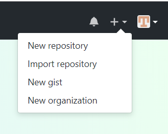
Set your new repository's information:
Owner: your github username (default)
Repository name: lab_1_3308
Description: My first github repo!
Public or Private: Either option here is fine, now that Github provides unlimited private repos for free.
Initialize with Readme:This is also optional, but go ahead and have github at a README file to your repo
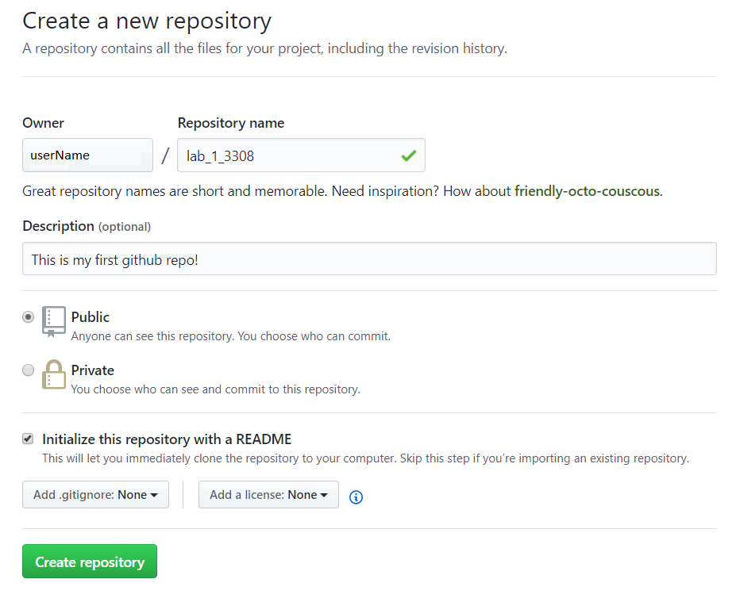
Copy your new repository's https address so you can clone it locally.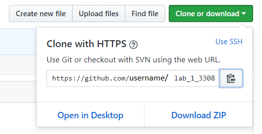
3. Setup Git (version control software)
(15 Minutes)
- 1. Install Git (a version control tool)
-
sudo apt-get install git - 2. Set your git username to match your github account
-
git config --global user.name "myUserName" - 3. Verify your git username was updated
-
git config --global user.name - 4. Set your git email to match your github account
-
git config --global user.email "myUserName@gmail.com" - 5. Verify your git email was updated
-
git config --global user.email - 6. Clone your github repo (created in step 2)
-
git clone https://github.com/myUserName/lab_1_3308.git - 7. Create a new file (to test your connection)
-
nano test.txt- Switch to insert mode (press "i") to add text
- Add any text you wish (This is a test!!!)
- To save & quit, press ctrl (to change mode) and type wq(write & quite) and hit enter
- 8. Add & Commit your changes to the repo
-
git add . git commit -m "Commit message goes here" git push
4. Install & Test PostgreSQL
(15 Minutes)
- 1. Install PostgreSQL
-
sudo apt-get install postgresql postgresql-contrib - 2. Start PostgreSQL
-
service postgresql start - 3. Switch to the postgres user account
-
During the installation process, PostgreSQL created a new user account named postgres. You'll be using this user account for most of your database interactions.
sudo -u postgres psql - 4. Create a practice database
-
create database practiceDB; - 5. Enter the practice database
-
\c practicedb; - 6. Create a practice table
- Copy the following code into psql terminal
create table if not exists store(id serial, sname varchar(40) not null, qty integer not null, price float not null, primary key(id)); insert into store (sname, qty, price) values ('apple', 10, 1),('pear', 5, 2),('banana', 10, 1.5),('lemon', 100, 0.1),('orange', 50, 0.2); - 7. Test your table
-
select * from store; (out)id | sname | qty | price (out)---+--------+-----+------- (out) 1 | apple | 10 | 1 (out) 2 | pear | 5 | 2 (out) 3 | banana | 10 | 1.5
5. Install & Test Node.js
(10 Minutes)
- 1.Install curl (a data transfer tool)
-
sudo apt-get install curl - 2. Add the Node.js PPA (Personal Package Archive)
-
curl -sL https://deb.nodesource.com/setup_11.x | sudo -E bash - - 3. Install Node.js
-
sudo apt-get install -y nodejs - 4. Create practice Node.js website
-
Copy into your file the following code. As a note, you can also use the built-in text editor instead of vim/nano to modify the text files. However, it is still strongly encouraged for you to become familiar with a terminal text editor. Not all linux systems have a desktop to work within!vim test_server.jsconst http = require('http'); const hostname = '127.0.0.1'; const port = 3000; const server = http.createServer((req, res) => { res.statusCode = 200; res.setHeader('Content-Type', 'text/plain'); res.end('Hello World\n'); }); server.listen(port, hostname, () => { console.log(`Server running at http://${hostname}:${port}/`); }); - 5. Start your Node.js website
-
node test_server.js